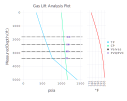

Plotting
All plotting functions wrap Gadfly plot definitions.
Plotting functionality is lazily loaded and not available until Gadfly has been loaded.
Examples
plot_gaslift
using Gadfly
plot_gaslift(model, tubing_pressures, casing_pressures, valvedata, "Gas Lift Analysis Plot")
plot_pressure
plot_pressure(model, tubing_pressures, "Tubing Pressure Drop")plot_pressures
plot_pressures(model, tubing_pressures, casing_pressures, "Tubing and Casing Pressures")plot_temperature
plot_temperature(model.wellbore, model.temperatureprofile, "Temperature Profile")plot_pressureandtemp
plot_pressureandtemp(model, tubing_pressures, casing_pressures, "Pressures and Temps")Functions
PressureDrop.plot_pressure — Function.plot_pressure(well::Wellbore, pressures, ctitle = nothing)
Plot pressure profile for a given wellbore using the pressure outputs from one of the pressure traverse functions.
See traverse_topdown and pressure_and_temp.
plot_pressure(m::WellModel, pressures, ctitle = nothing)
Plot pressure profile for a given wellbore using the pressure outputs from one of the pressure traverse functions.
The wellbore field must be defined in the passed WellModel.
See traverse_topdown and pressure_and_temp.
PressureDrop.plot_pressures — Function.function plot_pressures(well::Wellbore, tubing_pressures, casing_pressures, ctitle = nothing, valvedepths = [])
Plot relevant gas lift pressures for a given wellbore and set of calculated pressures.
See traverse_topdown, casing_traverse_topdown, and pressure_and_temp.
plot_pressures(m::WellModel, tubing_pressures, casing_pressures, ctitle = nothing)
Plot relevant gas lift pressures for a given wellbore and set of calculated pressures.
The wellbore field must be defined in the passed WellModel, with the valves field optional.
See traverse_topdown, casing_traverse_topdown, and pressure_and_temp.
PressureDrop.plot_temperature — Function.plot_temperature(well::Wellbore, temps, ctitle = nothing)
Plot temperature profile for a given wellbore using the pressure outputs from one of the pressure traverse functions.
See linear_wellboretemp and Shiu_wellboretemp.
PressureDrop.plot_pressureandtemp — Function.plot_pressureandtemp(well::Wellbore, tubing_pressures, casing_pressures, temps, ctitle = nothing, valvedepths = [])
Plot pressure & temperature profiles for a given wellbore using the pressure & temperature outputs from the pressure traverse & temperature functions.
See traverse_topdown,pressure_and_temp, linear_wellboretemp, Shiu_wellboretemp.
plot_pressureandtemp(m::WellModel, tubing_pressures, casing_pressures, ctitle = nothing)
Plot pressure & temperature profiles for a given wellbore using the pressure & temperature outputs from the pressure traverse & temperature functions.
The wellbore and temperatureprofile fields must be defined in the passed WellModel, with the valves field optional.
See traverse_topdown,pressure_and_temp, linear_wellboretemp, Shiu_wellboretemp.
PressureDrop.plot_gaslift — Function.plot_gaslift(well::Wellbore, tubing_pressures, casing_pressures, temps, valvedata, ctitle = nothing)
Plot pressure & temperature profiles along with valve depths and opening/closing pressures for a gas lift well.
Requires a valve table in the same format as returned by the valve_calcs function.
See traverse_topdown,pressure_and_temp, linear_wellboretemp, Shiu_wellboretemp, valve_calcs.
plot_gaslift(m::WellModel, tubing_pressures, casing_pressures, valvedata, ctitle = nothing)
Plot pressure & temperature profiles along with valve depths and opening/closing pressures for a gas lift well.
Requires a valve table in the same format as returned by the valve_calcs function. The passed WellModel must also have the wellbore, temperatureprofile, and valves fields defined.
See traverse_topdown,pressure_and_temp, linear_wellboretemp, Shiu_wellboretemp, valve_calcs.